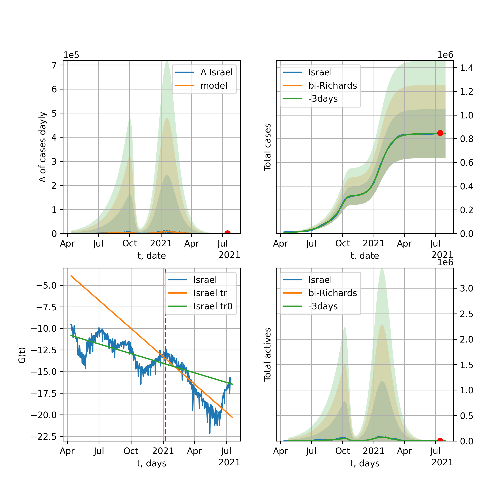
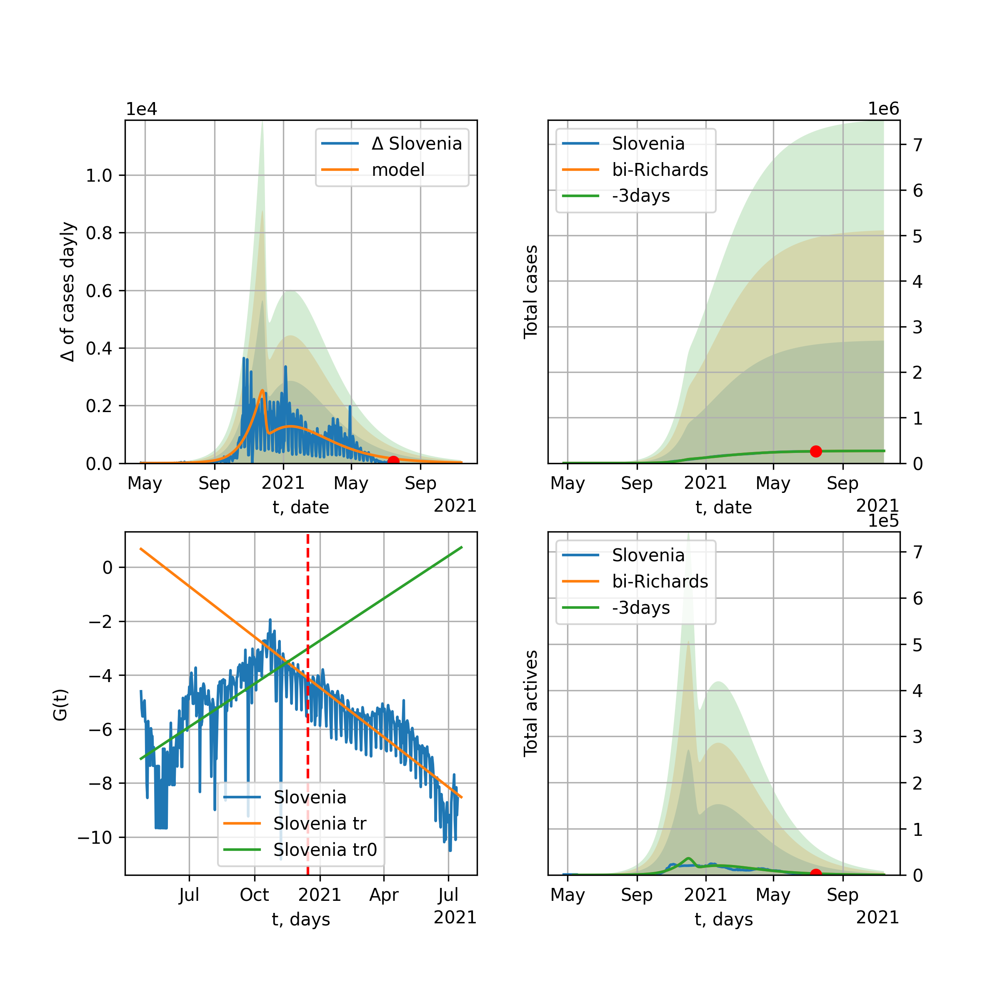

Multi-logistic model of COVID-19 dynamics
Model, code, results
Project maintained by algmaknick Hosted on GitHub Pages — Theme by mattgraham
World

World data at: 2020-06-05
+3 day model MAPE: 0.007436
model: bi-Richards
coeffs: [ 5.85401489e+06 2.59805520e+00 -2.10681222e+01 1.60863374e-02]
S.Korea scenario coeffs: [0.36242246, 2.56241634, 1.84890887, 0.13324732]
rational stdev: 0.089228
forecast at the end of period: +471 days
deltaDaycases: 2940
total cases: 12861969 ± 1147646
total death: 747715 ± 200151
bi-Richards approximation splitting point: 50
trend coefficient of determination: 0.841542
intercept: -2.306173
slope: -0.033475
trend coefficient of determination: 0.383594
intercept: -3.605218
slope: -0.008566
European Union

European Union data at: 2020-06-05
+3 day model MAPE: 0.007007
model: logisticQ
coeffs: [ 1.12904279e+06 3.92507516e-07 3.56497761e+01 -2.56198419e+05]
S.Korea scenario coeffs: [0.35416971, 0.02606324, 4.35859408, 19.30413219]
rational stdev: 0.340894
forecast at the end of period: +141 days
deltaDaycases: 356
total cases: 1521921 ± 518813
total death: 164270 ± 167995
trend coefficient of determination: 0.988439
intercept_: -7.8608906567510655
coeffs_: [ 0. -0.26179872 0.0014683 ]
Brazil

Brazil data at: 2020-06-05
+3 day model MAPE: 0.019143
model: logisticQ
coeffs: [ 1.43071721e+06 6.29945141e-06 9.00720025e+01 -1.12860581e+04]
S.Korea scenario coeffs: [0.35416971, 0.02606324, 4.35859408, 19.30413219]
rational stdev: 0.387155
forecast at the end of period: +421 days
deltaDaycases: 285
total cases: 1929476 ± 747005
total death: 104677 ± 121578
trend coefficient of determination: 0.902034
intercept_: -4.497719627200751
coeffs_: [ 0. -0.25143118 0.00138471]

Brazil data at: 2020-06-05
+3 day model MAPE: 0.000106
model: Richards
coeffs: [1.06086832e+07 1.74401886e-01 2.45854628e+01 1.05141183e-01]
S.Korea scenario coeffs: [0.36242246, 2.56241634, 1.84890887, 0.13324732]
rational stdev: 0.333727
forecast at the end of period: +1051 days
deltaDaycases: 1746
total cases: 14164091 ± 4726935
total death: 768427 ± 769333
trend coefficient of determination: 0.234848
intercept: -2.625402
slope: -0.022587
Russia

Russia data at: 2020-06-05
+3 day model MAPE: 0.014154
model: Richards
coeffs: [6.11934554e+05 4.22325542e-01 1.43849163e+00 1.15010254e-01]
S.Korea scenario coeffs: [0.36242246, 2.56241634, 1.84890887, 0.13324732]
rational stdev: 0.109090
forecast at the end of period: +281 days
deltaDaycases: 617
total cases: 792564 ± 86460
total death: 9739 ± 3187
trend coefficient of determination: 0.979206
intercept: -2.227003
slope: -0.043813
USA

USA data at: 2020-06-05
+3 day model MAPE: 0.013208
model: Richards
coeffs: [ 2.22358416e+06 4.30654448e+00 -7.25319293e+01 9.35830423e-03]
S.Korea scenario coeffs: [0.36242246, 2.56241634, 1.84890887, 0.13324732]
rational stdev: 0.362495
forecast at the end of period: +463 days
deltaDaycases: 675
total cases: 2979088 ± 1079906
total death: 168814 ± 183582
trend coefficient of determination: 0.942655
intercept: -1.131303
slope: -0.041148
Spain

Spain data at: 2020-06-05
+3 day model MAPE: 0.000757
model: Richards
coeffs: [ 2.93026552e+05 6.89001157e+00 -4.84559200e+01 8.86506466e-03]
S.Korea scenario coeffs: [0.36242246, 2.56241634, 1.84890887, 0.13324732]
rational stdev: 0.243641
forecast at the end of period: +281 days
deltaDaycases: 115
total cases: 393574 ± 95890
total death: 37073 ± 27097
trend coefficient of determination: 0.960544
intercept: -0.695714
slope: -0.061901
Italy

Italy data at: 2020-06-05
+3 day model MAPE: 0.000819
model: Richards
coeffs: [ 2.37173979e+05 6.97807145e+00 -5.43181783e+01 8.50086106e-03]
S.Korea scenario coeffs: [0.36242246, 2.56241634, 1.84890887, 0.13324732]
rational stdev: 0.072624
forecast at the end of period: +253 days
deltaDaycases: 159
total cases: 314925 ± 22871
total death: 45351 ± 9880
trend coefficient of determination: 0.984791
intercept: -1.079348
slope: -0.056844
United Kingdom

United Kingdom data at: 2020-06-05
+3 day model MAPE: 0.001079
model: Richards
coeffs: [ 3.16235773e+05 3.80709598e+00 -6.11365284e+01 1.22443811e-02]
rational stdev: 0.137966
forecast at the end of period: +351 days
deltaDaycases: 0
total cases: 316235 ± 43629
total death: 44939 ± 18600
trend coefficient of determination: 0.967651
intercept: -1.385858
slope: -0.045642
France

France data at: 2020-06-05
+3 day model MAPE: 0.005106
model: Richards
coeffs: [ 1.47875373e+05 1.44370800e+00 -1.88618559e+00 5.86279142e-02]
S.Korea scenario coeffs: [0.36242246, 2.56241634, 1.84890887, 0.13324732]
rational stdev: 128.945720
forecast at the end of period: +113 days
deltaDaycases: 333
total cases: 188243 ± 24273138
total death: 35803 ± 13849930
trend coefficient of determination: 0.737568
intercept: -1.481083
slope: -0.057839
Germany

Germany data at: 2020-06-05
+3 day model MAPE: 0.003485
model: Richards
coeffs: [ 1.81459046e+05 1.03199507e+01 -4.56839069e+01 7.54046271e-03]
S.Korea scenario coeffs: [0.36242246, 2.56241634, 1.84890887, 0.13324732]
rational stdev: 0.252439
forecast at the end of period: +183 days
deltaDaycases: 141
total cases: 241709 ± 61017
total death: 11423 ± 8650
trend coefficient of determination: 0.950786
intercept: -1.314431
slope: -0.061717
Turkey

Turkey data at: 2020-06-05
+3 day model MAPE: 0.007236
model: Richards
coeffs: [ 1.68235841e+05 8.22673449e+00 -4.55350341e+01 8.11200973e-03]
S.Korea scenario coeffs: [0.36242246, 2.56241634, 1.84890887, 0.13324732]
rational stdev: 0.274597
forecast at the end of period: +196 days
deltaDaycases: 279
total cases: 215340 ± 59131
total death: 5945 ± 4897
trend coefficient of determination: 0.823329
intercept: -1.043462
slope: -0.054658
Iran

Iran data at: 2020-06-05
+3 day model MAPE: 0.023205
model: bi-Richards
coeffs: [1.29615146e+05 4.21945315e+00 6.67010342e+00 1.21471783e-02]
S.Korea scenario coeffs: [0.36242246, 2.56241634, 1.84890887, 0.13324732]
rational stdev: 0.289234
forecast at the end of period: +295 days
deltaDaycases: 293
total cases: 253713 ± 73382
total death: 12346 ± 10712
bi-Richards approximation splitting point: 75
trend coefficient of determination: 0.949245
intercept: -0.918902
slope: -0.055204
trend coefficient of determination: 0.271245
intercept: -4.953994
slope: 0.007601
Canada

Canada data at: 2020-06-05
+3 day model MAPE: 0.001583
model: Richards
coeffs: [ 1.09935707e+05 2.79481645e+00 -6.78426928e+01 1.51369695e-02]
S.Korea scenario coeffs: [0.36242246, 2.56241634, 1.84890887, 0.13324732]
rational stdev: 0.175530
forecast at the end of period: +420 days
deltaDaycases: 34
total cases: 147325 ± 25859
total death: 12029 ± 6334
trend coefficient of determination: 0.970058
intercept: -1.598714
slope: -0.044209
Belgium

Belgium data at: 2020-06-05
+3 day model MAPE: 0.001640
model: Richards
coeffs: [ 5.94320831e+04 4.42423742e+00 -3.82984587e+01 1.52378605e-02]
S.Korea scenario coeffs: [0.36242246, 2.56241634, 1.84890887, 0.13324732]
rational stdev: 0.734516
forecast at the end of period: +183 days
deltaDaycases: 85
total cases: 76865 ± 56458
total death: 12482 ± 27504
trend coefficient of determination: 0.955551
intercept: -1.228228
slope: -0.058885
Peru

Peru data at: 2020-06-05
+3 day model MAPE: 0.003408
model: Richards
coeffs: [ 7.20271599e+05 5.97239876e-01 -4.39736390e+01 3.88926372e-02]
S.Korea scenario coeffs: [0.36242246, 2.56241634, 1.84890887, 0.13324732]
rational stdev: 0.316544
forecast at the end of period: +771 days
deltaDaycases: 215
total cases: 952548 ± 301523
total death: 26238 ± 24916
trend coefficient of determination: 0.717057
intercept: -1.629138
slope: -0.028238
Netherlands

Netherlands data at: 2020-06-05
+3 day model MAPE: 0.003425
model: Richards
coeffs: [ 4.71134953e+04 1.35789083e+00 -1.68240839e+01 4.95423266e-02]
S.Korea scenario coeffs: [0.36242246, 2.56241634, 1.84890887, 0.13324732]
rational stdev: 0.119290
forecast at the end of period: +183 days
deltaDaycases: 49
total cases: 61907 ± 7384
total death: 7884 ± 2821
trend coefficient of determination: 0.963201
intercept: -1.208190
slope: -0.059818
India

India data at: 2020-06-05
+3 day model MAPE: 0.006190
model: Richards
coeffs: [ 3.80728778e+06 3.40589349e-01 -3.83095171e+01 4.59411422e-02]
S.Korea scenario coeffs: [0.36242246, 2.56241634, 1.84890887, 0.13324732]
rational stdev: 0.376314
forecast at the end of period: +1051 days
deltaDaycases: 1450
total cases: 4878497 ± 1835846
total death: 137063 ± 154736
trend coefficient of determination: 0.625720
intercept: -1.846433
slope: -0.021548
Switzerland

Switzerland data at: 2020-06-05
+3 day model MAPE: 0.001421
model: logisticQ
coeffs: [ 3.02558899e+04 6.46266273e-07 2.61278367e+01 -2.19126783e+05]
S.Korea scenario coeffs: [0.35416971, 0.02606324, 4.35859408, 19.30413219]
rational stdev: 0.327693
forecast at the end of period: +71 days
deltaDaycases: 21
total cases: 40678 ± 13330
total death: 2525 ± 2482
trend coefficient of determination: 0.981121
intercept_: -4.095532900321922
coeffs_: [ 0. -0.29102221 0.00155543]
Ecuador

Ecuador data at: 2020-06-05
+3 day model MAPE: 0.004306
model: Richards
coeffs: [ 5.48889879e+04 1.49252052e+00 -5.33607888e+01 2.37608330e-02]
S.Korea scenario coeffs: [0.36242246, 2.56241634, 1.84890887, 0.13324732]
rational stdev: 0.342468
forecast at the end of period: +631 days
deltaDaycases: 3
total cases: 74473 ± 25504
total death: 6330 ± 6503
trend coefficient of determination: 0.211707
intercept: -2.079055
slope: -0.039320
Portugal

Portugal data at: 2020-06-05
+3 day model MAPE: 0.008662
model: bi-Richards
coeffs: [ 1.61505648e+04 3.10363913e+00 -2.16461232e+01 1.28458292e-02]
rational stdev: 1.318799
forecast at the end of period: +211 days
deltaDaycases: 0
total cases: 44315 ± 58443
total death: 1911 ± 7560
bi-Richards approximation splitting point: 61
trend coefficient of determination: 0.882106
intercept: -0.741706
slope: -0.064669
trend coefficient of determination: 0.000288
intercept: -5.003638
slope: 0.000674
Saudi Arabia

Saudi Arabia data at: 2020-06-05
+3 day model MAPE: 0.003618
model: Richards
coeffs: [1.38268164e+05 1.21351796e-01 5.45798417e+01 4.48257874e-01]
S.Korea scenario coeffs: [0.36242246, 2.56241634, 1.84890887, 0.13324732]
rational stdev: 0.294034
forecast at the end of period: +309 days
deltaDaycases: 61
total cases: 184949 ± 54381
total death: 1240 ± 1093
trend coefficient of determination: 0.697426
intercept: -3.766339
slope: -0.059284
Sweden

Sweden data at: 2020-06-05
+3 day model MAPE: 0.031527
model: Richards
coeffs: [ 5.72436321e+04 2.25847259e+00 -9.03889126e+01 1.29524908e-02]
S.Korea scenario coeffs: [0.36242246, 2.56241634, 1.84890887, 0.13324732]
rational stdev: 0.285918
forecast at the end of period: +421 days
deltaDaycases: 70
total cases: 68149 ± 19485
total death: 7362 ± 6314
trend coefficient of determination: 0.800682
intercept: -1.506751
slope: -0.032356
Pakistan

Pakistan data at: 2020-06-05
+3 day model MAPE: 0.041479
model: Richards
coeffs: [ 1.52125424e+06 3.60673375e-01 -6.43225965e+01 3.85917105e-02]
S.Korea scenario coeffs: [0.36242246, 2.56241634, 1.84890887, 0.13324732]
rational stdev: 0.369822
forecast at the end of period: +1191 days
deltaDaycases: 510
total cases: 1950838 ± 721462
total death: 40165 ± 44561
trend coefficient of determination: 0.334810
intercept: -2.228173
slope: -0.016207
Ireland

Ireland data at: 2020-06-05
+3 day model MAPE: 0.003249
model: logisticQ
coeffs: [ 2.46970099e+04 1.11716856e-06 3.58191650e+01 -1.08445902e+05]
S.Korea scenario coeffs: [0.35416971, 0.02606324, 4.35859408, 19.30413219]
rational stdev: 0.305897
forecast at the end of period: +113 days
deltaDaycases: 34
total cases: 32846 ± 10047
total death: 2179 ± 1999
trend coefficient of determination: 0.979595
intercept_: -4.0660585018218995
coeffs_: [ 0. -0.24781175 0.00121728]
Mexico

Mexico data at: 2020-06-05
+3 day model MAPE: 0.007683
model: Richards
coeffs: [ 6.49549327e+05 5.06706001e-01 -6.01262364e+01 3.94069217e-02]
S.Korea scenario coeffs: [0.36242246, 2.56241634, 1.84890887, 0.13324732]
rational stdev: 0.176228
forecast at the end of period: +911 days
deltaDaycases: 159
total cases: 860357 ± 151618
total death: 102983 ± 54445
trend coefficient of determination: 0.883758
intercept: -2.028983
slope: -0.024578
Singapore

Singapore data at: 2020-06-05
+3 day model MAPE: 0.025717
model: bi-Richards
coeffs: [ 3.01172409e+04 7.08092161e+00 -1.15622683e+00 7.60074281e-03]
S.Korea scenario coeffs: [0.36242246, 2.56241634, 1.84890887, 0.13324732]
rational stdev: 0.259300
forecast at the end of period: +351 days
deltaDaycases: 25
total cases: 48834 ± 12662
total death: 31 ± 24
bi-Richards approximation splitting point: 60
trend coefficient of determination: 0.125100
intercept: -2.318338
slope: -0.021597
trend coefficient of determination: 0.709011
intercept: -0.164875
slope: -0.032119
Chile

Chile data at: 2020-06-05
+3 day model MAPE: 0.046672
model: bi-Richards
coeffs: [1.44972526e+05 6.75378692e-02 7.52605830e+01 3.14425091e+00]
S.Korea scenario coeffs: [0.36242246, 2.56241634, 1.84890887, 0.13324732]
rational stdev: 0.277898
forecast at the end of period: +141 days
deltaDaycases: 32
total cases: 199860 ± 55540
total death: 2362 ± 1969
bi-Richards approximation splitting point: 12
trend coefficient of determination: 0.615331
intercept: -15.682643
slope: -0.837786
trend coefficient of determination: 0.976438
intercept: -24.523267
slope: -0.190264
Israel

Israel data at: 2020-06-05
+3 day model MAPE: 0.055828
model: bi-Richards
coeffs: [2.12473605e+03 9.02747361e+00 5.91067352e+01 2.40488296e-02]
rational stdev: 0.143861
forecast at the end of period: +15 days
deltaDaycases: 21
total cases: 19076 ± 2744
total death: 316 ± 136
bi-Richards approximation splitting point: 70
trend coefficient of determination: 0.930006
intercept: -1.086516
slope: -0.093113
trend coefficient of determination: 0.730665
intercept: -21.928359
slope: 0.207706
Austria

Austria data at: 2020-06-05
+3 day model MAPE: 0.003012
model: logisticQ
coeffs: [ 1.59019054e+04 5.53580694e-07 2.41636503e+01 -3.15746275e+05]
S.Korea scenario coeffs: [0.35416971, 0.02606324, 4.35859408, 19.30413219]
rational stdev: 0.321396
forecast at the end of period: +57 days
deltaDaycases: 10
total cases: 21415 ± 6882
total death: 854 ± 823
trend coefficient of determination: 0.972836
intercept_: -3.128234903155228
coeffs_: [ 0. -0.32396252 0.00200221]
Belarus

Belarus data at: 2020-06-05
+3 day model MAPE: 0.007701
model: Richards
coeffs: [ 6.89192457e+04 2.27555048e+00 -6.83795004e+01 1.73011390e-02]
S.Korea scenario coeffs: [0.36242246, 2.56241634, 1.84890887, 0.13324732]
rational stdev: 0.166985
forecast at the end of period: +351 days
deltaDaycases: 79
total cases: 86973 ± 14523
total death: 480 ± 240
trend coefficient of determination: 0.917459
intercept: -1.710354
slope: -0.040482
Japan

Japan data at: 2020-06-05
+3 day model MAPE: 0.004259
model: Richards
coeffs: [1.66955581e+04 1.18151505e-01 7.60837833e+01 1.03211580e+00]
S.Korea scenario coeffs: [0.36242246, 2.56241634, 1.84890887, 0.13324732]
rational stdev: 1.484464
forecast at the end of period: +141 days
deltaDaycases: 8
total cases: 22531 ± 33447
total death: 1197 ± 5330
trend coefficient of determination: 0.760321
intercept: -5.867427
slope: -0.081391
Qatar

Qatar data at: 2020-06-05
+3 day model MAPE: 0.009634
model: Richards
coeffs: [ 2.19650317e+05 2.68311099e-01 -3.98475775e+00 9.80979617e-02]
S.Korea scenario coeffs: [0.36242246, 2.56241634, 1.84890887, 0.13324732]
rational stdev: 0.448210
forecast at the end of period: +925 days
deltaDaycases: 6
total cases: 298546 ± 133811
total death: 223 ± 299
trend coefficient of determination: 0.160686
intercept: -3.394715
slope: -0.010484
Poland

Poland data at: 2020-06-05
+3 day model MAPE: 0.012165
model: Richards
coeffs: [ 3.37174488e+04 3.41352225e+00 -9.91155325e+01 9.30165466e-03]
S.Korea scenario coeffs: [0.36242246, 2.56241634, 1.84890887, 0.13324732]
rational stdev: 0.333195
forecast at the end of period: +491 days
deltaDaycases: 23
total cases: 43575 ± 14519
total death: 1949 ± 1948
trend coefficient of determination: 0.810987
intercept: -1.413178
slope: -0.036770
UAE

UAE data at: 2020-06-05
+3 day model MAPE: 0.007612
model: Richards
coeffs: [ 7.74665497e+04 1.21632840e+00 -9.08946769e+01 2.21365107e-02]
S.Korea scenario coeffs: [0.36242246, 2.56241634, 1.84890887, 0.13324732]
rational stdev: 0.167150
forecast at the end of period: +645 days
deltaDaycases: 25
total cases: 102674 ± 17161
total death: 747 ± 374
trend coefficient of determination: 0.887257
intercept: -2.072047
slope: -0.032543
Romania

Romania data at: 2020-06-05
+3 day model MAPE: 0.005117
model: Richards
coeffs: [ 2.20591265e+04 4.81728121e+00 -6.65020534e+01 9.45011797e-03]
S.Korea scenario coeffs: [0.36242246, 2.56241634, 1.84890887, 0.13324732]
rational stdev: 0.202851
forecast at the end of period: +323 days
deltaDaycases: 21
total cases: 28538 ± 5789
total death: 1868 ± 1136
trend coefficient of determination: 0.924603
intercept: -1.310173
slope: -0.043350
Ukraine

Ukraine data at: 2020-06-05
+3 day model MAPE: 0.014489
model: Richards
coeffs: [ 3.29445563e+04 2.14104344e+00 -5.49661906e+01 1.90544509e-02]
S.Korea scenario coeffs: [0.36242246, 2.56241634, 1.84890887, 0.13324732]
rational stdev: 0.211903
forecast at the end of period: +351 days
deltaDaycases: 33
total cases: 42181 ± 8938
total death: 1237 ± 786
trend coefficient of determination: 0.758796
intercept: -1.481771
slope: -0.038537
Indonesia

Indonesia data at: 2020-06-05
+3 day model MAPE: 0.005803
model: Richards
coeffs: [ 8.92106186e+04 1.15350081e+00 -1.33157743e+02 1.66478135e-02]
S.Korea scenario coeffs: [0.36242246, 2.56241634, 1.84890887, 0.13324732]
rational stdev: 0.218026
forecast at the end of period: +799 days
deltaDaycases: 46
total cases: 113330 ± 24708
total death: 6794 ± 4443
trend coefficient of determination: 0.813513
intercept: -2.031843
slope: -0.027355
Bangladesh

Bangladesh data at: 2020-06-05
+3 day model MAPE: 0.021950
model: bi-Richards
coeffs: [ 6.78697689e+05 6.61691591e-01 -6.39212483e+01 2.77447763e-02]
S.Korea scenario coeffs: [0.36242246, 2.56241634, 1.84890887, 0.13324732]
rational stdev: 0.399347
forecast at the end of period: +939 days
deltaDaycases: 268
total cases: 877092 ± 350264
total death: 11778 ± 14110
bi-Richards approximation splitting point: 29
trend coefficient of determination: 0.034134
intercept: -4.303830
slope: 0.051168
trend coefficient of determination: 0.800639
intercept: -0.963771
slope: -0.031048
South_Korea

South Korea data at: 2020-06-05
+3 day model MAPE: 0.005759
model: bi-Richards
coeffs: [ 3.25462797e+03 1.74053225e-01 -8.11302472e+01 -1.65495311e+03 2.55729827e-04]
rational stdev: 0.110833
forecast at the end of period: +43 days
deltaDaycases: 0
total cases: 11160 ± 1236
total death: 259 ± 86
bi-logisticQ approximation splitting point: 25
trend coefficient of determination: 0.936460
intercept: -5.478818
slope: -0.338423
trend coefficient of determination: 0.283624
intercept: -13.430704
slope: -0.025675
Denmark

Denmark data at: 2020-06-05
+3 day model MAPE: 0.002049
model: Richards
coeffs: [ 1.22659587e+04 7.57412632e-01 -2.17374814e+01 7.08529608e-02]
S.Korea scenario coeffs: [0.36242246, 2.56241634, 1.84890887, 0.13324732]
rational stdev: 0.283101
forecast at the end of period: +253 days
deltaDaycases: 7
total cases: 16288 ± 4611
total death: 803 ± 681
trend coefficient of determination: 0.907675
intercept: -1.842227
slope: -0.051439
Serbia

Serbia data at: 2020-06-05
+3 day model MAPE: 0.014777
model: bi-Richards
coeffs: [1.79672671e+03 1.53458817e-01 5.75545706e+01 5.27137521e-01]
rational stdev: 0.137109
forecast at the end of period: +183 days
deltaDaycases: 0
total cases: 12127 ± 1662
total death: 256 ± 105
bi-Richards approximation splitting point: 50
trend coefficient of determination: 0.911785
intercept: -3.052439
slope: -0.117198
trend coefficient of determination: 0.596778
intercept: -6.618941
slope: -0.048928
Kuwait

Kuwait data at: 2020-06-05
+3 day model MAPE: 0.023276
model: bi-Richards
coeffs: [3.48057929e+04 2.58557093e-01 6.61569335e+01 3.38537524e-01]
S.Korea scenario coeffs: [0.36242246, 2.56241634, 1.84890887, 0.13324732]
rational stdev: 0.172144
forecast at the end of period: +190 days
deltaDaycases: 56
total cases: 48546 ± 8357
total death: 386 ± 199
bi-Richards approximation splitting point: 24
trend coefficient of determination: 0.009097
intercept: -4.333636
slope: -0.023334
trend coefficient of determination: 0.642369
intercept: -3.592045
slope: -0.031801
Philippines

Philippines data at: 2020-06-05
+3 day model MAPE: 0.066291
model: Richards
coeffs: [ 4.12816089e+04 1.66016445e+00 -1.51686623e+02 1.21891500e-02]
S.Korea scenario coeffs: [0.36242246, 2.56241634, 1.84890887, 0.13324732]
rational stdev: 0.357740
forecast at the end of period: +757 days
deltaDaycases: 21
total cases: 52625 ± 18826
total death: 2518 ± 2702
trend coefficient of determination: 0.566005
intercept: -1.931628
slope: -0.030480
Norway

Norway data at: 2020-06-05
+3 day model MAPE: 0.001915
model: Richards
coeffs: [ 8.41358807e+03 6.98832957e+00 -4.19497866e+01 1.05377761e-02]
S.Korea scenario coeffs: [0.36242246, 2.56241634, 1.84890887, 0.13324732]
rational stdev: 0.173455
forecast at the end of period: +183 days
deltaDaycases: 7
total cases: 11170 ± 1937
total death: 311 ± 161
trend coefficient of determination: 0.928333
intercept: -1.039476
slope: -0.064675
Czechia

Czechia data at: 2020-06-05
+3 day model MAPE: 0.001837
model: bi-Richards
coeffs: [2.65709155e+03 2.45520675e+00 2.45946381e+00 2.16170022e-02]
rational stdev: 1.089708
forecast at the end of period: +71 days
deltaDaycases: 1
total cases: 10533 ± 11478
total death: 361 ± 1180
bi-Richards approximation splitting point: 59
trend coefficient of determination: 0.409630
intercept: -1.505517
slope: -0.055773
trend coefficient of determination: 0.008727
intercept: -5.081867
slope: -0.003818
Colombia

Colombia data at: 2020-06-05
+3 day model MAPE: 0.029988
model: bi-Richards
coeffs: [ 1.68717273e+05 1.43962539e+00 -4.83930273e+01 1.87296325e-02]
S.Korea scenario coeffs: [0.36242246, 2.56241634, 1.84890887, 0.13324732]
rational stdev: 0.193132
forecast at the end of period: +491 days
deltaDaycases: 206
total cases: 197986 ± 38237
total death: 6187 ± 3584
bi-Richards approximation splitting point: 40
trend coefficient of determination: 0.747477
intercept: -1.026996
slope: -0.063956
trend coefficient of determination: 0.091513
intercept: -3.010178
slope: -0.003757
Australia

Australia data at: 2020-06-05
+3 day model MAPE: 0.001890
model: bi-Richards
coeffs: [ 1.03087432e+03 6.25740322e+00 -4.36732893e+01 8.46823694e-03]
S.Korea scenario coeffs: [0.36242246, 2.56241634, 1.84890887, 0.13324732]
rational stdev: 0.717215
forecast at the end of period: +43 days
deltaDaycases: 0
total cases: 7317 ± 5248
total death: 102 ± 219
bi-Richards approximation splitting point: 50
trend coefficient of determination: 0.756174
intercept: -0.979010
slope: -0.083623
trend coefficient of determination: 0.090428
intercept: -5.547472
slope: -0.012655
Malaysia

Malaysia data at: 2020-06-05
+3 day model MAPE: 0.012025
model: bi-Richards
coeffs: [ 4.96552664e+03 2.72657701e+00 -8.98611539e+00 1.50537435e-02]
S.Korea scenario coeffs: [0.36242246, 2.56241634, 1.84890887, 0.13324732]
rational stdev: 0.151610
forecast at the end of period: +141 days
deltaDaycases: 0
total cases: 11506 ± 1744
total death: 161 ± 73
bi-Richards approximation splitting point: 70
trend coefficient of determination: 0.335206
intercept: -1.843984
slope: -0.045174
trend coefficient of determination: 0.000013
intercept: -5.237314
slope: 0.000325
Dominican Republic

Dominican Republic data at: 2020-06-05
+3 day model MAPE: 0.001121
model: Richards
coeffs: [ 3.52777850e+04 8.15585734e-01 -8.21572404e+01 3.17457549e-02]
S.Korea scenario coeffs: [0.36242246, 2.56241634, 1.84890887, 0.13324732]
rational stdev: 0.160519
forecast at the end of period: +645 days
deltaDaycases: 11
total cases: 46697 ± 7495
total death: 1310 ± 630
trend coefficient of determination: 0.746009
intercept: -2.186197
slope: -0.032618
Egypt

Egypt data at: 2020-06-05
+3 day model MAPE: 0.007823
model: logisticQ
coeffs: [ 2.72389274e+05 1.08155658e-05 1.09839459e+02 -4.80308353e+03]
S.Korea scenario coeffs: [0.35416971, 0.02606324, 4.35859408, 19.30413219]
rational stdev: 0.238074
forecast at the end of period: +526 days
deltaDaycases: 105
total cases: 364744 ± 86836
total death: 13668 ± 9761
trend coefficient of determination: 0.969605
intercept_: -7.62548178532456
coeffs_: [ 0. -0.12453076 0.00067436]
Finland

Finland data at: 2020-06-05
+3 day model MAPE: 0.002288
model: Richards
coeffs: [ 7.50249710e+03 1.21002198e+00 -3.86353962e+01 3.98227249e-02]
S.Korea scenario coeffs: [0.36242246, 2.56241634, 1.84890887, 0.13324732]
rational stdev: 0.151845
forecast at the end of period: +323 days
deltaDaycases: 3
total cases: 10029 ± 1523
total death: 465 ± 211
trend coefficient of determination: 0.832749
intercept: -1.539460
slope: -0.054252
Morocco

Morocco data at: 2020-06-05
+3 day model MAPE: 0.005888
model: logisticQ
coeffs: [ 8.14853747e+03 1.00117322e-06 3.52980699e+01 -8.79496973e+04]
S.Korea scenario coeffs: [0.35416971, 0.02606324, 4.35859408, 19.30413219]
rational stdev: 0.267785
forecast at the end of period: +141 days
deltaDaycases: 7
total cases: 10854 ± 2906
total death: 279 ± 224
trend coefficient of determination: 0.968460
intercept_: -5.351960761177338
coeffs_: [ 0. -0.19989481 0.00115368]
Argentina

Argentina data at: 2020-06-05
+3 day model MAPE: 0.012276
model: Richards
coeffs: [1.55569168e+05 4.53400363e-02 1.12399111e+02 7.49076730e+00]
S.Korea scenario coeffs: [0.36242246, 2.56241634, 1.84890887, 0.13324732]
rational stdev: 0.197903
forecast at the end of period: +176 days
deltaDaycases: 101
total cases: 211113 ± 41779
total death: 6342 ± 3765
trend coefficient of determination: 0.925327
intercept: -51.707465
slope: -0.352751
Algeria

Algeria data at: 2020-06-05
+3 day model MAPE: 0.000399
model: logisticQ
coeffs: [ 1.22004748e+04 1.30105241e-06 4.86876510e+01 -4.69781244e+04]
S.Korea scenario coeffs: [0.35416971, 0.02606324, 4.35859408, 19.30413219]
rational stdev: 0.260419
forecast at the end of period: +197 days
deltaDaycases: 16
total cases: 15896 ± 4139
total death: 1104 ± 862
trend coefficient of determination: 0.949421
intercept_: -6.774200554522356
coeffs_: [ 0. -0.15338391 0.0009069 ]
Luxembourg

Luxembourg data at: 2020-06-05
+3 day model MAPE: 0.001687
model: Richards
coeffs: [ 3.93892179e+03 2.31626290e+01 -3.94384250e+01 4.57774649e-03]
S.Korea scenario coeffs: [0.36242246, 2.56241634, 1.84890887, 0.13324732]
rational stdev: 0.201869
forecast at the end of period: +127 days
deltaDaycases: 2
total cases: 5282 ± 1066
total death: 144 ± 87
trend coefficient of determination: 0.716958
intercept: -1.734934
slope: -0.069113
Thailand

Thailand data at: 2020-06-05
+3 day model MAPE: 0.000594
model: Richards
coeffs: [ 3.03228242e+03 1.67247946e+01 -4.01950688e+01 7.08402701e-03]
S.Korea scenario coeffs: [0.36242246, 2.56241634, 1.84890887, 0.13324732]
rational stdev: 0.090953
forecast at the end of period: +99 days
deltaDaycases: 2
total cases: 4073 ± 370
total death: 76 ± 20
trend coefficient of determination: 0.739503
intercept: -1.862413
slope: -0.091005
Hungary

Hungary data at: 2020-06-05
+3 day model MAPE: 0.004996
model: Richards
coeffs: [4.09153550e+03 3.80973724e-01 4.16284425e+00 1.66827831e-01]
S.Korea scenario coeffs: [0.36242246, 2.56241634, 1.84890887, 0.13324732]
rational stdev: 0.055551
forecast at the end of period: +183 days
deltaDaycases: 4
total cases: 5348 ± 297
total death: 730 ± 121
trend coefficient of determination: 0.936800
intercept: -1.903828
slope: -0.058599
Greece

Greece data at: 2020-06-05
+3 day model MAPE: 0.004031
model: logisticQ
coeffs: [ 2.82151327e+03 4.05034019e-07 2.53929255e+01 -2.62106819e+05]
S.Korea scenario coeffs: [0.35416971, 0.02606324, 4.35859408, 19.30413219]
rational stdev: 0.264033
forecast at the end of period: +71 days
deltaDaycases: 3
total cases: 3753 ± 991
total death: 227 ± 179
trend coefficient of determination: 0.925352
intercept_: -3.8775866709173643
coeffs_: [ 0. -0.24805095 0.00149188]
Iraq

Iraq data at: 2020-06-05
+3 day model MAPE: 0.128113
model: bi-Richards
coeffs: [1.06543320e+05 1.32975604e-01 9.71892282e+01 4.92034752e+00]
S.Korea scenario coeffs: [0.36242246, 2.56241634, 1.84890887, 0.13324732]
rational stdev: 0.111543
forecast at the end of period: +169 days
deltaDaycases: 0
total cases: 148909 ± 16609
total death: 4310 ± 1442
bi-Richards approximation splitting point: 15
trend coefficient of determination: 0.968527
intercept: -22.668150
slope: -0.662616
trend coefficient of determination: 0.927135
intercept: -32.818240
slope: -0.172302
Croatia

Croatia data at: 2020-06-05
+3 day model MAPE: 0.001791
model: logisticQ
coeffs: [ 2.20436780e+03 5.83987066e-07 2.75595240e+01 -2.25766953e+05]
S.Korea scenario coeffs: [0.35416971, 0.02606324, 4.35859408, 19.30413219]
rational stdev: 0.315956
forecast at the end of period: +85 days
deltaDaycases: 1
total cases: 2963 ± 936
total death: 135 ± 127
trend coefficient of determination: 0.961524
intercept_: -2.963256038896013
coeffs_: [ 0. -0.20894978 0.00066521]
Iceland

Iceland data at: 2020-05-30
+3 day model MAPE: 0.000117
model: logisticQ
coeffs: [ 1.80267683e+03 8.35445177e-06 1.33258395e+01 -2.11907264e+04]
rational stdev: 0.058147
forecast at the end of period: +21 days
deltaDaycases: 0
total cases: 1802 ± 104
total death: 9 ± 1
trend coefficient of determination: 0.933689
intercept_: -5.015116946837249
coeffs_: [ 0. -0.25356125 0.00122989]
Estonia

Estonia data at: 2020-06-05
+3 day model MAPE: 0.009388
model: bi-Richards
coeffs: [2.37807582e+02 1.92678129e-01 6.02260502e+01 4.53470191e-01]
rational stdev: 0.110192
forecast at the end of period: +106 days
deltaDaycases: 0
total cases: 1987 ± 219
total death: 71 ± 23
bi-Richards approximation splitting point: 50
trend coefficient of determination: 0.818290
intercept: -4.010989
slope: -0.100210
trend coefficient of determination: 0.002499
intercept: -9.594013
slope: 0.003995
Bulgaria

Bulgaria data at: 2020-06-05
+3 day model MAPE: 0.003137
model: Richards
coeffs: [2.82394016e+03 7.50736978e-02 3.40456068e+01 9.01039704e-01]
S.Korea scenario coeffs: [0.36242246, 2.56241634, 1.84890887, 0.13324732]
rational stdev: 0.141841
forecast at the end of period: +351 days
deltaDaycases: 0
total cases: 3845 ± 545
total death: 230 ± 97
trend coefficient of determination: 0.873713
intercept: -6.654338
slope: -0.075065
New Zealand

New Zealand data at: 2020-05-28
+3 day model MAPE: 0.001125
model: logisticQ
coeffs: [ 1.48316442e+03 2.61946481e-06 2.50154651e+01 -9.24244019e+04]
S.Korea scenario coeffs: [0.35416971, 0.02606324, 4.35859408, 19.30413219]
rational stdev: 0.274300
forecast at the end of period: +79 days
deltaDaycases: 0
total cases: 2007 ± 550
total death: 29 ± 23
trend coefficient of determination: 0.902211
intercept_: -3.5729578368920185
coeffs_: [ 0. -0.17986227 0.00021014]
Slovenia

Slovenia data at: 2020-06-05
+3 day model MAPE: 0.000181
model: Richards
coeffs: [ 1.48197790e+03 4.71478038e-01 -5.79361306e+00 1.88841229e-01]
S.Korea scenario coeffs: [0.36242246, 2.56241634, 1.84890887, 0.13324732]
rational stdev: 0.198532
forecast at the end of period: +113 days
deltaDaycases: 1
total cases: 1981 ± 393
total death: 146 ± 86
trend coefficient of determination: 0.892939
intercept: -1.807624
slope: -0.097172
Slovakia

Slovakia data at: 2020-06-03
+3 day model MAPE: 0.001522
model: logisticQ
coeffs: [ 1.50822076e+03 2.99422266e-04 2.39821850e+01 -4.11767404e+02]
S.Korea scenario coeffs: [0.35416971, 0.02606324, 4.35859408, 19.30413219]
rational stdev: 0.229975
forecast at the end of period: +101 days
deltaDaycases: 0
total cases: 2037 ± 468
total death: 37 ± 25
trend coefficient of determination: 0.923778
intercept_: -3.6026392635727618
coeffs_: [ 0. -0.24434134 0.00134378]
Lithuania

Lithuania data at: 2020-06-05
+3 day model MAPE: 0.000198
model: bi-Richards
coeffs: [2.71245409e+02 1.12608375e-01 6.14220826e+01 1.29585649e+00]
rational stdev: 0.157527
forecast at the end of period: +14 days
deltaDaycases: 0
total cases: 1719 ± 270
total death: 72 ± 34
bi-Richards approximation splitting point: 48
trend coefficient of determination: 0.874661
intercept: -5.650197
slope: -0.212329
trend coefficient of determination: 0.165794
intercept: -13.344599
slope: -0.023425
Latvia

Latvia data at: 2020-06-05
+3 day model MAPE: 0.005711
model: Richards
coeffs: [ 1.08610618e+03 9.42707673e+00 -7.35060419e+01 5.95592927e-03]
S.Korea scenario coeffs: [0.36242246, 2.56241634, 1.84890887, 0.13324732]
rational stdev: 0.247610
forecast at the end of period: +211 days
deltaDaycases: 1
total cases: 1366 ± 338
total death: 31 ± 23
trend coefficient of determination: 0.535544
intercept: -1.792409
slope: -0.052828
Cyprus

Cyprus data at: 2020-06-05
+3 day model MAPE: 0.004668
model: Richards
coeffs: [ 9.36314644e+02 7.39986740e-01 -9.12275508e+00 1.24809093e-01]
S.Korea scenario coeffs: [0.36242246, 2.56241634, 1.84890887, 0.13324732]
rational stdev: 0.146212
forecast at the end of period: +71 days
deltaDaycases: 2
total cases: 1179 ± 172
total death: 20 ± 8
trend coefficient of determination: 0.768607
intercept: -2.112571
slope: -0.071262
Malta

Malta data at: 2020-06-05
+3 day model MAPE: 0.003328
model: bi-Richards
coeffs: [1.59239199e+02 1.47043494e-01 6.51882093e+01 2.80934122e+00]
rational stdev: 0.211857
forecast at the end of period: +15 days
deltaDaycases: 0
total cases: 619 ± 131
total death: 8 ± 5
bi-Richards approximation splitting point: 50
trend coefficient of determination: 0.907427
intercept: -9.015014
slope: -0.326380
trend coefficient of determination: 0.415722
intercept: -17.934892
slope: -0.074072
Sri Lanka

Sri Lanka data at: 2020-06-05
+3 day model MAPE: 0.017294
model: Richards
coeffs: [ 1.47451133e+04 4.63966189e-01 -1.52015772e+02 2.75073239e-02]
S.Korea scenario coeffs: [0.36242246, 2.56241634, 1.84890887, 0.13324732]
rational stdev: 0.115527
forecast at the end of period: +1191 days
deltaDaycases: 5
total cases: 18584 ± 2147
total death: 113 ± 39
trend coefficient of determination: 0.007586
intercept: -3.705075
slope: -0.005260
References
- Worldometers COVID-19 Coronavirus Pandemic
- Su COVID-19 susijusi gyventojų ir verslo statistika
- Bi-logistic growth
- Least squares
- scikit-learn
- scipy.org
- European Centre for Disease Prevention and Control An agency of the European Union
- Aaron Miller, Mac Josh Reandelar, Kimberly Fasciglione, Violeta Roumenova, Yan Li, Gonzalo H Otazu, Correlation between universal BCG vaccination policy and reduced morbidity and mortality for COVID-19: an epidemiological study, https://doi.org/10.1101/2020.03.24.20042937